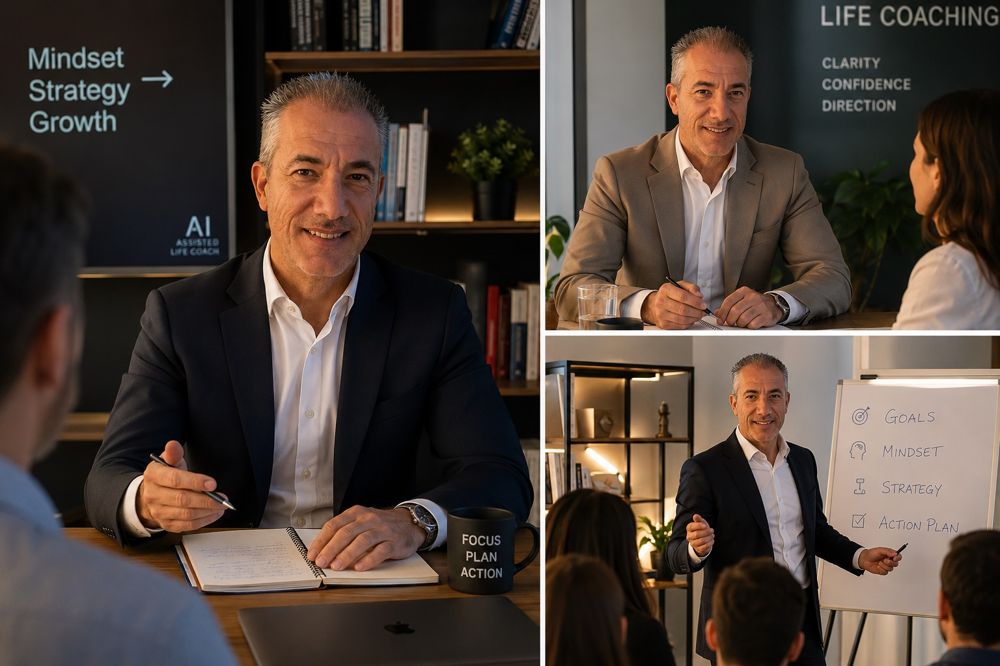

Along the way
Sessions, strategy, and the rooms in between

Certified life coaching methods, built into an AI that's there at 11pm on a Tuesday, backed by 30 years of real leadership and mentoring experience.
Insight rarely changes a life on its own ... direction does. A trained coach helps you name what you actually want, see what's standing between you and it, and build the discipline to close that gap.
See what you actually want, separated from what you were told to want.
Big goals broken into steps sized for a real week, not a fantasy one.
Follow-through doesn't only live in the room once a week, it lives every day after.
Before it quietly runs the show again, the way it always has.
Difficulty doesn't arrive in one size. The method stays the same only the depth at which it's applied changes.
A habit that won't hold, a promise to yourself that never survives Wednesday. Solved with structure: a realistic system and a check-in before day three of silence becomes month three.
Success by metrics someone else set. This is values work separating your goals from inherited ones, and giving yourself permission to want something different.
A layoff, a move, a chapter closing, anything that erases the map you were using. Here the work is slower and deeper: rebuilding identity and direction one honest conversation at a time.
"Software that helps you think" is not new. What changed is how much of a real conversation it can hold and what happens when that conversation is shaped by an actual coach's judgment.
Fixed if-this-then-that logic. Useful for checklists, useless for anything as unpredictable as a human life.
Systems began learning patterns from data instead of following scripts — the first hint a machine could adapt to a specific person.
Machines learned to hold a real conversation, to listen, remember context, and respond in kind.
Conversation ability alone isn't coaching. Paired with a certified coach's frameworks and years of real session experience, it becomes a tool that's available at 11pm on a Tuesday.

I'm a certified life coach and an executive at an IT company, with 30 years spent managing and mentoring teams, and setting the business goals those teams had to hit. I've sat on both sides of the desk — the one setting the target, and the one helping someone actually reach it.
This AI Assisted Life Coach is where that experience meets the certified coaching frameworks I use in the room, built into a tool available whenever the moment actually calls for it, with three private sessions with me built into the deepest program.
Illustrative examples of the kind of shift clients describe, shared here as a sample of the experience.
From a focused sprint to the full pairing of AI availability and in-person coaching craft.
A focused sprint on one goal or one sticking point. Good for testing the format or working through something specific and time-bound.
Start Option ARoom to work through a full goal cycle, clarify the desire, build the plan, and work through the resistance that shows up once you actually start.
Start Option BThe full pairing: consistent AI availability between sessions, and three in-person sessions with a certified coach for the depth only a human conversation can hold.
Start Option COpen the conversation bubble in the corner of this page for a free 5-minute session with the AI life coach. No account, no card, just a real first conversation.
↘ Look for the icon in the top-right corner